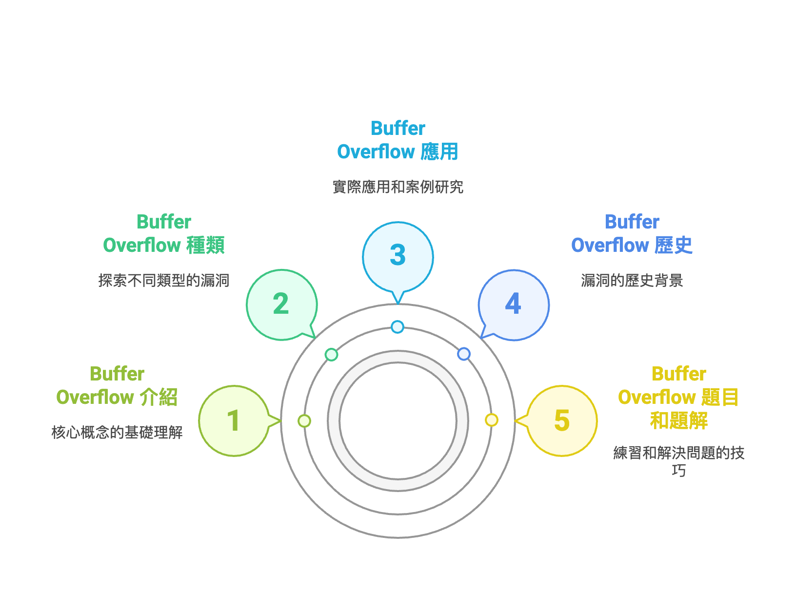
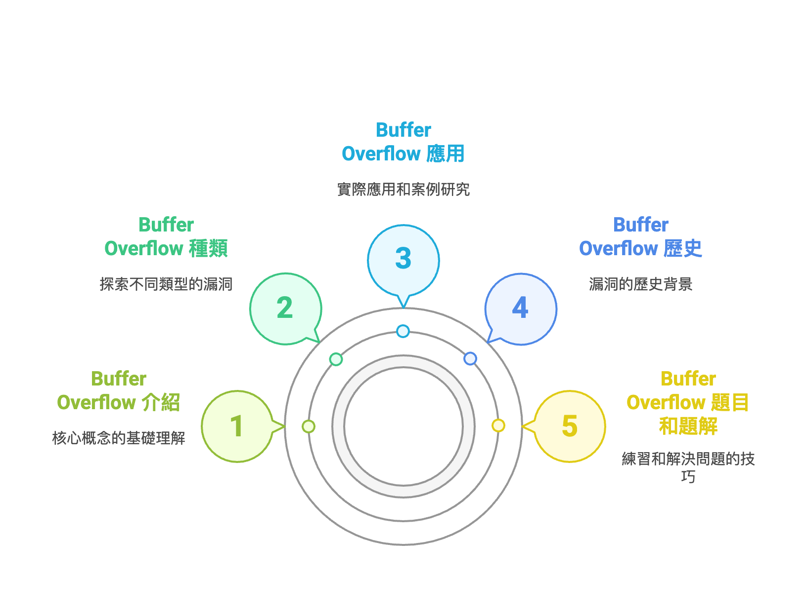
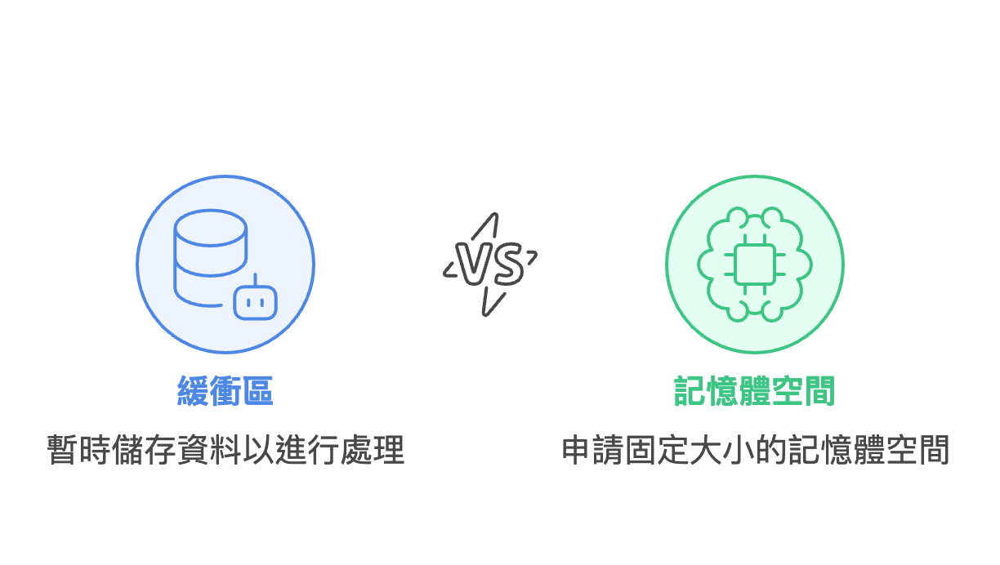
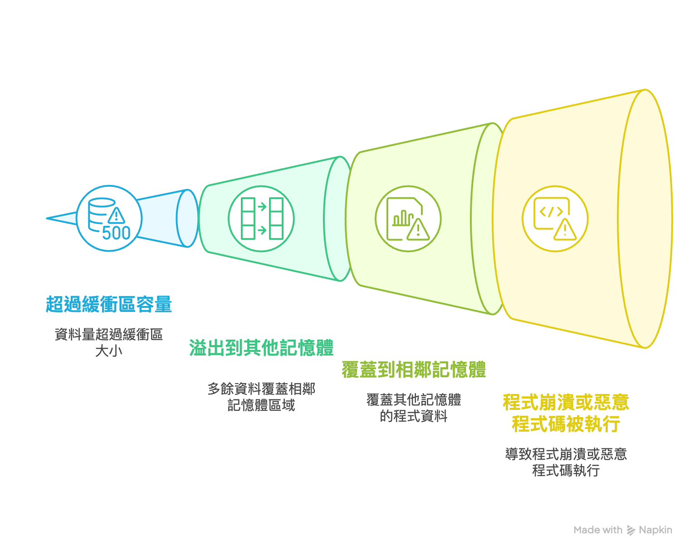
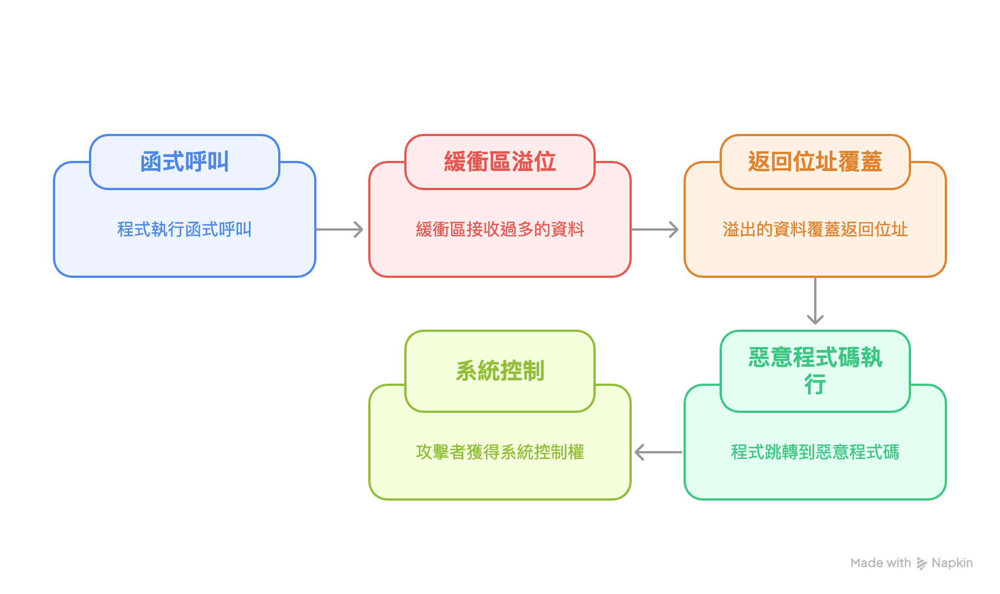
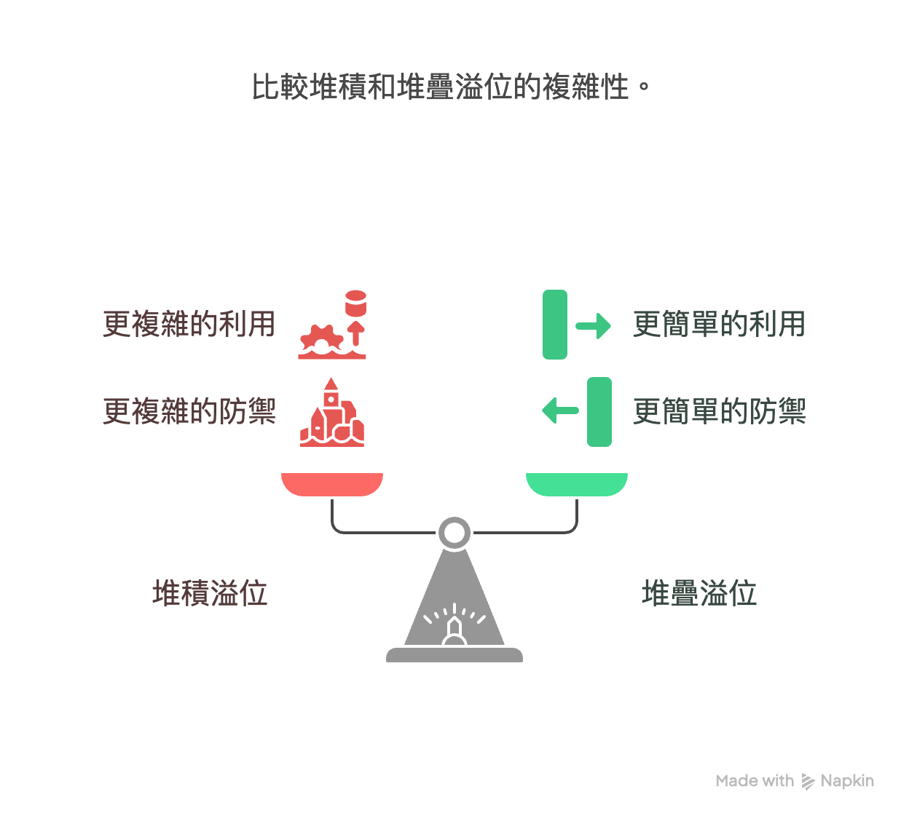
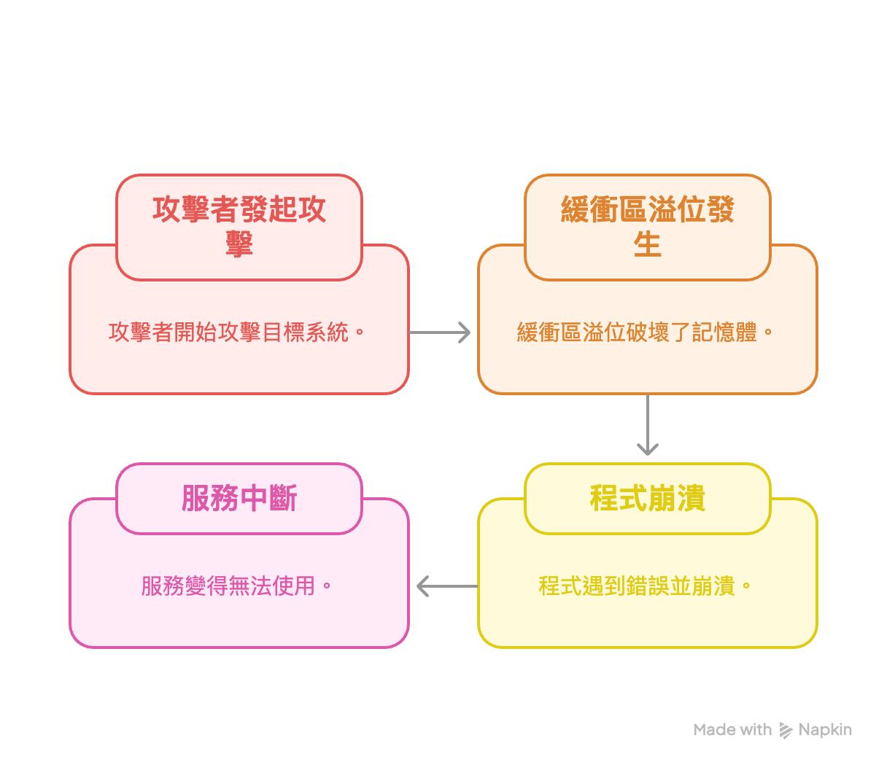
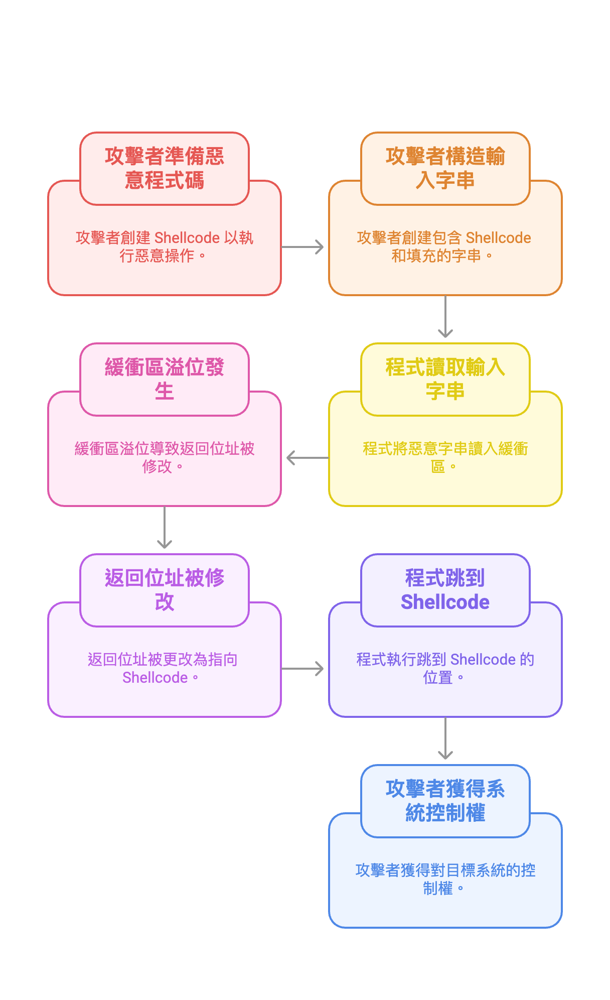

Buffer Overflow
歡迎來到 Buffer Overflow 教學素材包！這是一份專為初學者設計的學習資源，旨在幫助您理解資訊安全領域中最基礎也最重要的一個漏洞類型。
在本教學包中，我們將會用簡單明瞭的方式，帶您一步步探索：
無論您是國中生、高中生，或是任何對資訊安全抱持好奇心的朋友，這份教材都能讓您專注於概念的理解，建立扎實的基礎知識。讓我們一起開始這趟學習之旅吧！
歡迎來到 Buffer Overflow 教學素材包！這是一份專為初學者設計的學習資源，旨在幫助您理解資訊安全領域中最基礎也最重要的一個漏洞類型。
在本教學包中，我們將會用簡單明瞭的方式，帶您一步步探索：
無論您是國中生、高中生，或是任何對資訊安全抱持好奇心的朋友，這份教材都能讓您專注於概念的理解，建立扎實的基礎知識。讓我們一起開始這趟學習之旅吧！
在電腦科學中，緩衝區 (Buffer) 是一塊連續的記憶體區域，用於在資料從一個地方傳輸到另一個地方時，暫時存放這些資料。您可以把它想像成一個固定大小的容器或箱子。
程式在處理資料時（例如：讀取使用者輸入、從檔案讀取內容），會先申請一塊固定大小的記憶體空間（也就是緩衝區），然後將資料放入其中等待後續處理。
當一個程式試圖將資料寫入一個緩衝區時，如果寫入的資料量超過了該緩衝區的容量，多餘的資料就會「溢出」，並覆蓋到相鄰的記憶體區域。這個現象就稱為緩衝區溢位 (Buffer Overflow)。
這種覆蓋行為是危險的，因為被覆蓋的相鄰記憶體區域可能存放著重要的資訊，例如：
一旦這些重要資訊被惡意竄改，就可能導致程式崩潰，或更糟的是，被攻擊者利用來執行任意程式碼。
這是最常見的緩衝區溢位類型。程式的函式呼叫、區域變數等資訊通常儲存在一個稱為「堆疊 (Stack)」的記憶體區域。堆疊的運作方式是「後進先出 (Last-In, First-Out)」。
當一個函式中的緩衝區發生溢位時，溢出的資料很容易覆蓋到儲存在堆疊上的返回位址 (Return Address)。返回位址是 CPU 用來記錄函式執行完畢後應該跳回哪裡繼續執行的指標。如果攻擊者能精確地將返回位址修改成一段惡意程式碼的起始位址，那麼當函式結束時，程式就會跳去執行攻擊者的程式碼，進而取得系統控制權。
「堆積 (Heap)」是另一塊記憶體區域，主要用於儲存動態配置的資料，也就是程式在執行期間才決定要建立的物件或資料結構，其大小和生命週期不是在編譯時就固定的。
與堆疊不同，堆積的結構比較複雜，溢位發生時不會直接覆蓋返回位址。然而，堆積溢位仍然非常危險。攻擊者可以利用它來覆蓋相鄰的資料物件、破壞程式內部管理記憶體的資料結構（如指標），或是觸發其他更複雜的攻擊手法，最終也可能達到執行任意程式碼的目的。堆積溢位的利用通常比堆疊溢位更困難，但防禦也相對更複雜。
這是利用緩衝區溢位相對簡單的攻擊方式。攻擊者的目的不是為了控制系統，而是讓目標程式或系統崩潰，無法提供正常服務。
當緩衝區溢位發生時，溢出的資料會破壞程式的記憶體狀態，例如覆蓋了關鍵變數或指標。這常常會導致程式在後續執行時遇到非預期的錯誤（如存取無效的記憶體位址），最終引發作業系統的保護機制，強制終止該程式。如此一來，該程式提供的服務（如網站、遊戲伺服器）就會中斷。
這是緩衝區溢位最嚴重、最危險的應用。攻擊者的目標是在受害者的電腦上執行自己準備的惡意程式碼，通常稱為 Shellcode。
在典型的堆疊溢位攻擊中，攻擊者會構造一個特殊的輸入字串，這個字串包含：
當程式將這個惡意字串讀入緩衝區時，溢位發生，返回位址被修改。當函式結束時，程式不會回到正常流程，而是跳到 Shellcode 的位置開始執行。如果成功，攻擊者就能在目標系統上執行任意指令，例如開啟後門、竊取資料或完全控制系統。
緩衝區溢位作為一種安全漏洞，其歷史幾乎和電腦網路本身一樣悠久。雖然這個概念早已存在，但直到某個重大事件後，才真正引起全球性的關注。
在早期的電腦系統中，安全並非首要考量。程式語言（如 C 語言）為了追求執行效率，提供了許多直接操作記憶體的函式（如 `gets()`, `strcpy()`），但並未內建邊界檢查機制。這意味著程式設計師必須自行確保輸入的資料不會超出緩衝區的大小，一旦疏忽，就可能產生緩衝區溢位。在當時，這通常被視為程式錯誤 (Bug)，而非可被利用的安全漏洞。
1988年11月2日，康乃爾大學研究生 Robert Tappan Morris 釋放了一隻實驗性的「蠕蟲」程式到當時規模還很小的網際網路上。這隻蠕蟲的傳播方式之一，就是利用了 Unix 系統 `fingerd` 服務中的一個緩衝區溢位漏洞。
Morris 精心构造了一個超長的查詢請求，觸發了 `fingerd` 服務的緩衝區溢位，進而覆蓋堆疊上的返回位址，讓伺服器執行蠕蟲自帶的惡意程式碼，從而感染該伺服器並繼續尋找下一個目標。雖然 Morris 的本意並非破壞，但程式的設計缺陷導致蠕蟲失控地快速複製，造成當時約 10% 的網際網路主機癱瘓。
莫里斯蠕蟲事件是資安史上的里程碑，它首次向世界展示了緩衝區溢位漏洞可以被遠端利用，造成大規模的危害。從此，緩衝區溢位從一個理論上的程式錯誤，變成了駭客與資安專家攻防的焦點。
在莫里斯蠕蟲之後，關於緩衝區溢位的研究和利用技術層出不窮。1996年，資安雜誌 Phrack 發布了一篇經典文章《Smashing The Stack For Fun And Profit》，詳細介紹了利用堆疊溢位的技術細節，使得這類攻擊更加普及。
為了應對，作業系統和編譯器也發展出多種防禦機制，例如：
至今，緩衝區溢位攻防戰仍在持續，它已成為電腦科學教育和資安領域不可或缺的基礎課題。
準備好挑戰了嗎？
在你的終端機（或 CMD）輸入以下指令，
前往 CTF 練習平台開始解題！
docker pull ry4nl41/buffer-overflow
docker run -it --rm ry4nl41/buffer-overflow
這是一串 Docker 指令，輸入後會下載並執行一個包含挑戰的網頁伺服器映像檔，接著你就可以在瀏覽器中開啟挑戰了！
小提示
由開放式 Web 應用程式安全計畫 (OWASP) 提供的緩衝區溢位權威解釋，內容較為深入。
資安史上的經典文章，詳細闡述了堆疊溢位的原理與利用技術，是許多駭客的啟蒙讀物。
提供帶有 C 語言程式碼範例的緩衝區溢位教學，幫助理解程式層面的漏洞成因。
知名的資安 YouTuber，他的影片以視覺化和實作方式講解二進位安全，包含許多緩衝區溢位的實戰。
一個為 CTF 新手設計的學習網站，涵蓋了包含 Buffer Overflow 在內的多種資安主題。
由臺灣資安社群舉辦的競賽與活動平台，可以找到許多相關的學習資源與社群討論。